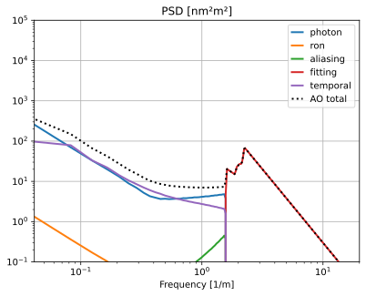
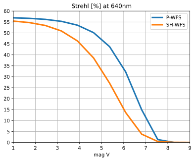
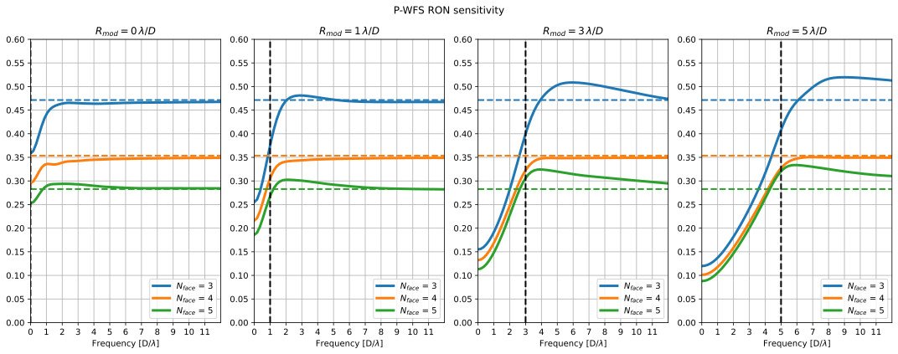
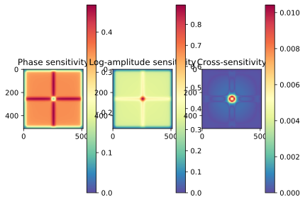
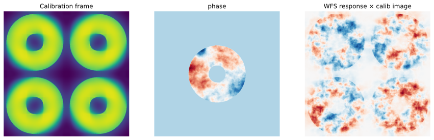
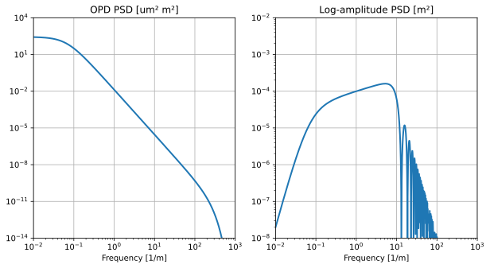
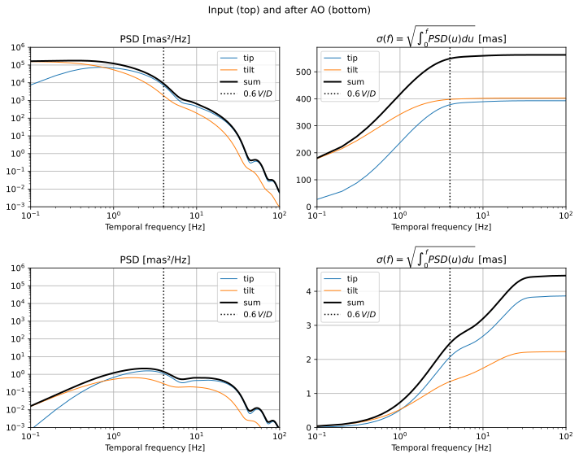
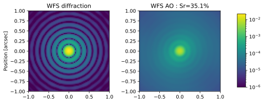
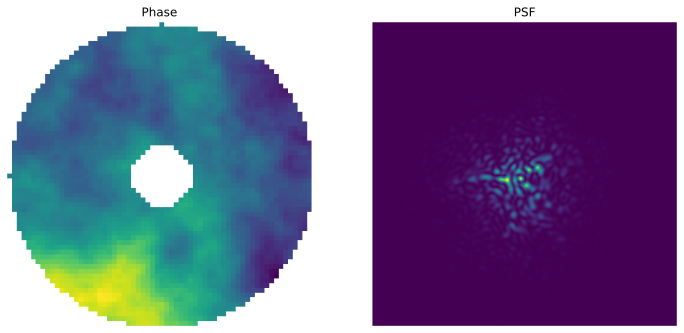

Example gallery¶
The scripts of the example/ folder. The figures come from running them.
Full AO simulations¶

Single-stage AOThe complete run behind the tutorial: error budget, PSD, PSF and Strehl ratio.

Cascaded AOA first-stage result fed into a second AO stage, down to the science PSF.
Did not run in the test build
ELT/HARMONI-SCAOPhase PSD and PSF for an ELT instrument.

Modulation abacusStrehl ratio and optical gain against the guide star magnitude, for several pyramid modulations.
Wavefront sensors¶

Pyramid vs Shack-Hartmann: noiseComparison of the two sensors.

Pyramid vs Shack-Hartmann: extended objectsComparison of the two sensors on extended objects.

Pyramid sensitivityRON sensitivity of a pyramid WFS.

Pyramid log-amplitude sensitivityPhase and log-amplitude sensitivity of a pyramid WFS.

Pyramid pupilsScript working with the pyramid signal on a random turbulent phase.
Control and reconstruction¶
Turbulence and short exposures¶

Generate an atmosphereRandom phase and log-amplitude screens from a turbulence profile.

Tip-tilt temporal PSDTemporal PSD of the turbulence tip-tilt.

Short exposures with AOMinimal AO example without OG computation, with short exposures.

Short exposures without AOShort exposures through the turbulence alone.